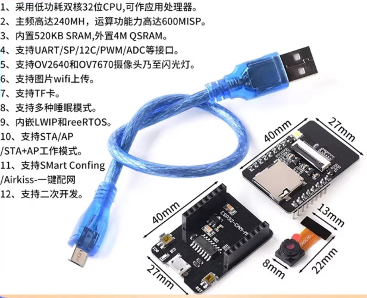
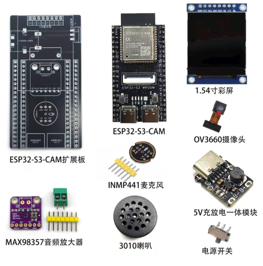

中建发展 · AI 分享
AI 时代：
我们的选择与行动
从政策压力到技术平权，从认知重建到分层落地
政策锚定
·
同行压力
·
技术祛魅
·
分层行动
·
风险管控
欢迎致辞。说明本次宣讲的背景：国资委要求、集团部署、中建发展的使命。强调这不是技术培训，而是战略认知对齐。
中建发展 · AI 分享
展示整体目录结构，让听众对今天的分享有全局预期。从政策到行动，五步推进。
从战略规划 → 写入政府工作报告 → 国务院专文定目标——AI+ 已经不是行业热点，是国家意志。
📐 政策升级脉络
2017.7
国务院印发《新一代人工智能发展规划》
国发〔2017〕35号 首次将 AI 上升为国家战略
2024.3
"人工智能+"首次写入全国两会政府工作报告
从产业政策升级为国策
2025.3
"人工智能+"连续第二年写入政府工作报告
措辞从"启动"升级为"持续推进"
2025.8
国务院印发《关于深入实施"人工智能+"行动的意见》
国发〔2025〕11号 专文部署 · 定量化目标 · 定时间表
🗣️ 两会原话（逐年升级）
2024 年政府工作报告
"深化大数据、人工智能等研发应用，开展'人工智能+'行动，打造具有国际竞争力的数字产业集群。"
2025 年政府工作报告
"持续推进'人工智能+'行动……支持大模型广泛应用，大力发展智能网联新能源汽车、人工智能手机和电脑、智能机器人等新一代智能终端以及智能制造装备。"
💡 关键认知
继 2015 年"互联网+"之后，"人工智能+"是下一个十年级国家产业政策。但这次节奏更快——"互联网+"从提出到专文花了两年，"AI+"只用了一年半。
这一页制造"政策升级"的紧迫感。先讲时间线：2017年就开始布局了，2024年首次写入两会，2025年连续第二年写入而且措辞升级——从"启动"到"持续推进"。然后翻到右边：把两年的政府工作报告原话放在一起对比，让听众自己感受措辞升级。最后用"互联网+"类比——上一个十年级政策是什么样的，这一个只会更快更猛。杀手锏金句："AI+不是选择题，是必答题；不是未来时，是现在进行时。"
📊 "三步走"量化路线图
2027
AI 深融 6 大领域
智能终端/智能体
普及率 > 70%
2030
AI 全面赋能
高质量发展
普及率 > 90%
🎯 六大专项行动
① AI + 科技创新
② AI + 产业
③ AI + 消费
④ AI + 民生
⑤ AI + 治理
⑥ AI + 全球合作
🏗️ 对建筑行业的三条定向要求
🔧 产业升级
"推动产业全要素智能化发展"
→ 设计、施工、运维全链条都要上 AI
🏠 "好房子"
"拓展 AI 在'好房子'全生命周期的应用"
→ 直接点名建筑行业，覆盖规划→设计→建造→运维
🌆 城市治理
"推动市政基础设施智能化改造升级"
→ 城市更新 + 智能化 = 中建的主战场
"到 2027 年，人工智能与经济社会各行业各领域广泛深度融合，智能终端、智能体等应用普及率超 70%。"
—— 国务院《深入实施"人工智能+"行动的意见》
左半边：先用三个大数字镇住场——2027年70%、2030年90%、2035全面智能社会。这不是"建议"，是国务院定的量化目标。然后快速过六大专项行动，说明覆盖面极广。右半边：重点来了——建筑业被直接点名。三条定向要求逐一展开，每一条都翻译成"对中建意味着什么"。杀手锏收尾："国家不是在'建议'你用AI，是在用国务院文件告诉你：到2027年，70%的终端和智能体要普及。这不是选择题，是必答题。"
三大定位 2026.1.28 国新办 · 庞骁刚
① 智算基础设施的重要供给者
央企不能只"用"算力，还要"建"算力——建智算中心、推国产替代
② AI 赋能千行百业的推动者
央企带头用 AI 改造主业，不是信息化部门的事，是一把手的事
③ 产业体系化布局的组织者
带动整个产业链一起上 AI，不只是自己用，还要拉着供应商一起
背景：庞骁刚 2025.10 从国家电网总经理调任国资委副主任，懂技术、懂行业，推动 AI 力度空前。
四大任务 2026.2.10 深化部署会 · 张玉卓
① 强化自主创新
持续攻关大模型技术，掌握"根技术"，实现更多"0 到 1"突破
② 强化场景培育
AI 与主责主业精准对接——战略意义强、经济回报高、民生关联紧的场景优先
③ 强化投资牵引
扩大算力有效投资，推动万卡级国产智算集群建设，"算力+电力"协同
④ 强化开源开放协同
推进"AI+"产业共同体建设，不搞封闭，要搞生态
💡 关键信号：央企数字化预算近 7000 亿，AI 预算 2000万-5000万的企业占 33% AI——大模型攻关、场景培育、算力投资、开源协同，四条线同时推进。窗口期不会等人，先行者正在拉开差距。
三大定位的关键："供给者"意味着央企要建算力，不只是用；"推动者"意味着要主动推AI与主业融合；"组织者"意味着要拉动整个产业链。四大任务中，"场景培育"对我们最直接——找场景的任务已经下放到子企业。底部关键信号：央企正在批量入场，窗口期不会等人。
📄 中建信字〔2025〕111号 2025.12.2
核心战略：集团建底座，子企业找场景
| 建底座 | 中建数科 → 算力统筹 + 建证大模型门户 |
| 找场景 | 各子企业 → 结合主业，从小切口入手，自行探索 |
| 出产品 | 有能力的子企业 → 三到五年形成有市场竞争力的产品 |
| 组织生态 | 集团信息化部 + 专项工作组 → 创新大赛、标杆评选 |
文兵 2026.2.27 讲话："三到五年形成一批有市场竞争力的 AI+建筑产品。"
🏗️ 四大重点领域
① AI 与主业深度融合 — 不能只停在管理层面
② 新质生产力与 AI 深度融合 — 投资布局优先倾斜
③ 穿透式监管与 AI 融合 — 管理的"牛鼻子"
④ 智能建造 + 运营管理云端集中化
📊 建证大模型平台 2025.9 上线
🎯 激励与规则
✅ 做出成果 → 经营业绩加分，先到先得
📋 场景方案 → 可随时申报，不等年初
🔒 算力支持 → 集团统一提供，子企业无需自建
AI 创新大赛（2026）：3月启动 → 6月初赛 → 9月决赛
子企业场景方案：已报 236 项，完成 15 项，试点 13 项。可随时申报，不等年初。
这一页承上启下：集团出了111号文。核心信息：集团建底座（建证大模型），子企业找场景。文兵把AI定位为"牛鼻子"工作。激励机制：做出成果有加分，场景方案可随时申报。算力由集团统一提供，不需要子企业自己建。底部数据：建证大模型已有2183个智能体，说明集团内部已经在动了。创新大赛9月决赛，现在准备还来得及。
四个方面的家底，让我们有能力去接。
建筑行业信息化极低，这些数据只有我们有。别人想做这些产品，没有这个数据基础。
云筑AI大模型
中建首个商业化AI大模型，通过国家网信办备案
云智采 1.0
采购周期↓40% · 成本↓20%
海外部投标评审
集团海外部认可，履约中
制度AI审核
已服务集团办公厅
不是实验室概念，是已经在跑的系统。
中建生态
1492万吨/日水务运营 · 28省覆盖
中建环能
江苏华大离心机龙头 · 30年制造积累
中建智能
智慧运营平台开发与运维经验
这些产业能力就是场景来源和工程化验证场。
云筑网
110万供应商 · 零获客成本铺开
中建大厦楼内
设计院/工程局/管理学院，试点零成本
集团通道
海外部 / 办公厅，已建立信任
有场景没AI能力的单位就在楼里。物理聚集降低了信任成本。
但这四张牌不能同时打。我们要有序打出，达到最好的效果——
所以做了系统研判，找出最该先打的。
四个能力依次展开：数据（三个大数字）、产品（云智采一炮通优先，海外部、制度审核在后）、产业依托（生态的运营场景、环能的制造能力、智能的平台经验——让总部看到中建发展不是只有云筑网）、渠道（云筑网+楼里邻居+集团通道）。最后一句转折：有序打出，不是全打出去。
遍历28软件+22硬件，行业研判+五步法筛选，最终3推进、5谨慎。
三个推进方向，每个都有清晰的选择理由和量化依据。
硬件 · 22进1
推进指数 80
AI 安全帽
唯一硬件推进方向。不做芯片不做系统——用成熟硬件+中建数据做行业适配。
→ 选1个智慧工地试点，最小闭环验证
软件 · 五步全通
推进指数 77
招投标合规审查
国家给了时间表——不是建议，是截止日期。140万次招标数据行业独占。
→ 中建体系内跑试点，验证围串标识别准确率
软件 · 五步全通
推进指数 75
海外部投标评审
无需从零验证——从集团海外部复制到八局国际、中建国际，路径最清晰。
→ 履约交付后，横向复制2-3个新客户部门
⚠️ 谨慎方向——条件到了就升级
供应商智能风控等合规方案获批
劳务市场行情指数等数据授权路径打通
智慧环卫AI运营等龙泉驿同类项目中标
安全管理AI化等安全管理部推广文件
建筑机器人（投资）等投资团队到位
🔭 未来构想——技术跟踪中
AI实时安全监护CV+IoT已部署，最接近启动
AI自动合约生成LLM合同能力已成熟
B2B Agent协同等A2A协议标准化
智能层统一平台技术已ready，等人整合
淘汰方向两类处置：技术重叠的可顺带覆盖 · 核心不是AI的不建议投入
每个推进方向都有三个量化数字镇场：AI安全帽330亿天花板/59元成本/1400万触达，招投标合规2027截止/140万数据/20个场景，海外部已履约/49%毛利/3家复制目标。数据让方向不空洞。5个谨慎和未来构想字号加大了一档，底部的淘汰和过渡并排，节省空间。
中建发展 · AI 分享
进入第二部分。第一部分讲了"国家要我们做"，现在看看"别人已经在做什么"——用同行压力强化行动紧迫感。
🇫🇷 Eiffage（法国）
招标书分析
原需 2 天，现在 20 分钟
节省 99% 时间
🇯🇵 Kajima（日本）
远程机械操作
3 个工程师远程操作 14 台机械
劳动力减少 80%，零事故
🇫🇷 Bouygues（法国）
施工调度优化
10 分钟生成
600 万种施工调度方案
三个案例，每个用一个数字讲清楚。Eiffage：2天变20分钟。Kajima：3人管14台机器，零事故。Bouygues：10分钟算600万种方案。这些不是PPT里的数字，是已经在落地的成果。下面的柱状图让对比更直观。
🏗️ 中铁建设
"铁小智" 建筑行业首个施工方案AI审核平台
22 万㎡高铁站房方案 · AI 90 秒审核 → 传统 3-4 小时
- 效率提升 80% · 返工率下降 65% · 成本降低 73%
- 已覆盖 100+ 项目 · 3000+ 份方案 · 10 余种类型
- 入选北京市智能建造创新应用场景（第一批）
🚇 中铁十一局
大盾构无人化运输
入选国资委首批 40 项央企 AI 高价值场景
建筑施工领域唯一
- 应用于 20 余个国家重点工程
- 金塘海底隧道：世界首次管片/箱涵无人化水平+垂直运输
- 蜀安隧道：14 米级盾构，月均 400 米进尺新纪录
🌉 中交集团
"蓝翼"大模型 央企首个土木建筑大模型
140 亿参数 · 30+ 场景应用
- 建筑央企中首个自研行业大模型
- 覆盖设计、施工、运维全链条场景
- 对标：中石油昆仑大模型（3000亿参数·152场景）的轻量版
🏭 中冶赛迪
AI 视觉识别 工业场景 CV 成熟度验证
识别准确率 98.7%
- 工业场景 AI 视觉识别已高度成熟
- 可迁移至建筑工地安全监控、质量检测等场景
- 为 HW-03 AI安全帽方向提供技术可行性佐证
🚨 关键信号：中铁十一局的"大盾构无人化运输"是建筑施工领域唯一入选央企 40 项 AI 高价值场景的项目。在央企 AI 的官方版图上，建筑施工只占一席。
💡 对标结论：铁小智的方案 AI 审核，与我们的招投标合规审查方向直接重合——都是"用 AI 审文档"，这条路已有同行跑通。
其余三家虽然在具体场景上不同，但都在证明同一件事：AI 嵌入建筑生产流程已经不是要不要的问题，是谁先做好的问题。
这一页拓展了四个同行案例的详情。中铁建设铁小智（效率80%·返工率65%·3000+方案），中铁十一局大盾构（唯一入选央企AI场景·20+国家重点工程），中交蓝翼大模型（央企首个·140亿参数·30+场景），中冶赛迪视觉识别（98.7%·成熟度佐证）。底部双栏：左红框信号+右蓝框对标结论——指向P8方向正确。
近 4 万名员工上线 AI 数智化学习平台
学员活跃率 94%
基于绚星AI人才发展平台，"战略引领、技术驱动"
→ AI 培训不是 HR 的事，是战略工程。4 万人的组织能全员跑通，说明规模不是借口。
焊接机器人：变异系数 15% → 2%
效率提升 2 倍
另有"路智纵横"道路智能建造系统，边沟装备效率 ↑50%+，平整度 ≤2mm
→ 两条产品线同时推进，有体系地做，不是零散试点。
千条清单 3 分钟审完
效率提升 60 倍
基于建证大模型平台的文档智能审查能力
→ 与中建发展的招投标合规审查方向高度同质竞争，中海已经在跑了。
📐 西南院
"问马工" AI 助手
2000+ 用户 · 24 家单位
规模落地
| 单位 | 代表成果 | 关键词 | 与中建发展的重合度 |
|---|
| 五局 | 4万人AI培训，活跃率94% | 全员覆盖 | 对标：组织和培训方法论 |
| 八局 | 焊接机器人，效率↑2倍 | 质量控制 | 对标：硬件集成落地能力 |
| 中海 | 千条清单3分钟，效率↑60倍 | 效率突破 | 直接竞争：AI文档审查 |
| 科工 | "云上农展"央视报道 | 品牌影响 | 对标：品牌建设与影响力 |
| 西南院 | "问马工"2000+用户/24家 | 规模落地 | 对标：从单点到多用户的推广路径 |
差距不在技术。
集团统一给了建证大模型底座，大家起点一样。
五局能做到 4 万人 94% 活跃，中海能做到千条清单 3 分钟——说明不是"能不能"的问题，是"多快"的问题。
中海的 AI 文档审查方向，会跟我们的招投标合规审查产生直接的竞争关系。
三张大卡讲主力（五局/八局/中海），每张不只有数字、还有一句"这意味着什么"的翻译。中海卡明确点出"与我们的招投标合规方向高度同质竞争"。下方两小卡补充科工和西南院，左边是汇总表+新列"与中建发展的重合度"，右边红色结论框升级为四句话递进。最后一句竞争关系警示是这一页的杀手锏。
国际标杆
Eiffage 2天→20分钟，Kajima 3人管14台零事故，Bouygues 600万种方案
AI 改造建筑业不是未来时，是现在进行时
国资体系
中石油昆仑 152 场景，国网 85% 效率提升——先行央企对 AI 的容忍度和期望值都在快速上升
国资委考核尺度不会等落后者
建筑同行
铁小智 3000+方案，中交蓝翼 140亿参数，中铁十一局唯一入选央企 AI 高价值场景
直接竞争对手已在我们的赛道上跑出成果
中建系
五局/八局/中海/科工/西南院——5家兄弟已在集团建证底座上跑出成果，我们还没上牌桌
同一集团同一底座，差距是速度差
四层看完只有一句结论——差距在应用层，不在技术层。
但好消息是——技术门槛没有你想的那么高。
四层对标，每层用一行"我们看到什么 → 所以呢"的格式给出判断句。国际标杆→现在进行时；国资体系→不会等落后者；建筑同行→直接对手已跑出成果；中建系→差距是速度差。四层看完落到最后金句：差距在应用层不在技术层，过渡到 Part 3 技术祛魅。
中建发展 · AI 分享
进入第三部分。前两个部分建立了"为什么要做"和"别人在做什么"的认知，现在拆解AI技术本身，消除神秘感。
不讲公式不讲代码，只讲和你有关的。
1950s - 2010s
传统 AI 阶段：规则驱动、统计模型
应用：人脸识别、安全帽检测、设备预测性维护
2017
Transformer 诞生：Google 论文《Attention Is All You Need》
"注意力机制"让机器第一次能理解上下文关系
2022.11
ChatGPT 3.5 发布：2 个月 1 亿用户
AI 从实验室走进办公室——每个人都能用自然语言和 AI 对话
2023 - 2026
大爆炸时代：GPT-4 → Claude → DeepSeek → 多模态 → Agent → 推理模型
AI 不仅能聊天，还能看图纸、操作软件、自主完成任务
💡 关键转折点不是技术突破，而是交互方式的革命——从"你要学会编程"变成"你只要会说话"。
💡 对中建发展的启示
AI 发展了 70 年，但从 ChatGPT 到今天的爆发只用了不到 4 年。我们不需要懂 70 年的技术积累——只需要学会用这 4 年的工具。门槛比想象的低得多。
时间线一页讲清AI发展史。重点不在技术细节，在于三个转折点：2017年Transformer让AI理解上下文、2022年ChatGPT让所有人能用AI、2023-2026年AI能做越来越多的事。底部两个并排框——左侧金句：交互方式的革命；右侧启示：门槛比想象的低得多。
🌐 通用大模型
参数量：千亿 ~ 万亿
代表：DeepSeek / Kimi / Qwen / GPT-4 / Claude
谁在用？
所有人都在用——写邮件、读文档、做PPT
🏭 垂直领域模型
参数量：百亿 ~ 千亿
代表：昆仑 / 大瓦特 / 蓝翼
谁在用？
信息化条线做行业适配
⚙️ 小参数专用模型
参数量：几亿 ~ 几十亿
代表：OCR / 翻译 / 云筑网匹配
谁在用？
工程化团队嵌入产品
对你意味着什么？ 日常工作用通用大模型，不需要懂技术；信息化团队可以做垂直适配；产品研发团队可以嵌入专用模型。
三种形态对应三种使用者。通用大模型——你们现在就能用，打开豆包/Kimi就能用。垂直领域模型——需要信息化团队做行业适配，比如昆仑大模型。小参数专用模型——嵌入在产品里，用户感知不到。底部蓝色框是对听众的直接指引：你属于哪一层？
| 能力 |
以前 |
现在 |
建筑行业案例 |
| 多模态 |
只能读写文字 |
输入：能看图纸、听语音、读表格、解析视频
输出：能生成图片、合成语音、出视频、画示意图 |
图纸审查自动标记 → 生成整改图示+语音播报
巡检视频自动分析 → 输出带标注的截屏报告 |
| 工具调用 |
只会说 |
基础：查数据库、发邮件、填表单（Function Calling）
进阶：操控硬件、读写文件、跨系统编排（MCP / Agent） |
自动填报、智能评标、系统间数据打通
ESP32-S3 机器人——AI 直接操控硬件做识别+对话 |
| 知识库 |
懂全世界 |
懂你们公司（RAG：制度/合同/项目经验）
懂你（LLM + Wiki：记住你的偏好、习惯、上下文） |
制度问答、合同审查、历史项目检索
个人工作台——Claude Code 读取你的笔记和项目上下文 |
| 推理能力 |
直接回答 |
先想再说——Claude 深度思考 · o4-mini · Gemini Deep Think · DeepSeek-R1 · Qwen QwQ
2026 年推理已是大模型标配，不再是某个模型的独门绝技 |
施工方案智能审核、风险评估、多因素决策 |
这四种能力叠加在一起，意味着 AI 可以看懂你们的图纸、查阅你们的制度、操作你们的系统、做出合理判断。
这张表要讲透。每一行都是"以前 vs 现在"的对比。重点是企业知识库那一行——RAG技术让AI不再只懂通用知识，它能学习你们公司的制度、合同、历史项目。最后一句话是杀手锏：四种能力叠加，AI可以看懂图纸、查制度、操作系统、做判断——这不是科幻，是2026年已经能做的事。
| 模式 |
定义 |
自主度 |
代表工具 |
成熟度 |
| Chat |
你说一句，它回一句 |
★☆☆☆ |
ChatGPT · 豆包 · Kimi · Gemini · DeepSeek · 通义千问 |
已普及 |
| Copilot |
你干活，它在旁边帮 |
★★☆☆ |
GitHub Copilot · Cursor · WPS AI · 通义灵码 |
大规模落地 |
| Agent |
你下任务，它自己干 |
★★★☆ |
Claude Code · Gemini Agent · 扣子 · Dify |
快速成熟 |
| Multi-Agent |
你定目标，团队自己干 |
★★★★ |
Manus · CrewAI · AutoGen |
已可用 |
📈 中建智能自己正在走的这条路
6 个月前
→
现在
公司用 AI 聊天 → 公司用 AI 建系统、拿项目、拓业务边界
海外体系 os-五个项目 · 7步LLM流水线 · ~18次调用/项目 · 3分钟端到端 · 110+评审规则 · 即将与集团签约
关键认知：选对级别比追最新重要。
日常用 Chat/Copilot 就很好。
复杂任务可以试试 Agent——我们已经试过了，跑通了。
四种模式递进。Chat你们已经会了。Copilot像副驾驶，你开车它帮你看路。Agent像员工，你下任务它自己干。Multi-Agent像团队，你定目标它们协作。关键认知：不需要追最新最炫的，选对级别比追最新重要。日常工作用Chat/Copilot就很好，复杂任务可以试试Agent。
AI 不是在匀速进步——是在加速。每一步的间隔都在缩短。
加速时间线——从年缩到月
2022 Q4
ChatGPT 发布 · 2个月1亿用户 · 史上最快产品增长
2023
GPT-4 发布（3月）· 全球 AI 投资破 $2000亿 · 各国出台战略 间距：4个月
2024
DeepSeek-V3 开源（12月）· Claude 超越 GPT · Agent 框架爆发 · 中国 AI 融资创纪录 间距：9个月
2025
Manus · DeepSeek-R1 · Gemini Agent · 国资委明确央企 AI 投资 · 国发11号文 间距：3个月
2026
Multi-Agent 进入生产 · 行业大模型规模化落地 · 八部门 AI+招投标全面推行 间距：正在加速
对你意味着什么
窗口在加速关闭。每一步的间隔从年→月。2022到2023等了4个月，2025到2026已经压到3个月。明年的竞争只会更快。
门槛在加速降低。DeepSeek等开源模型让 AI 成本从百万级降到万元级。2023年还要博士团队，2026年产品经理一周就能出系统。
政策在加速收紧。国发11号文（2025.8）→ 八部门AI招投标（2026.2）→ 2027强制截止。不是建议，是倒计时。
每个加速都在问你：还要等吗？三年后"不用AI"将等于"不会用电脑"——这句话从预言变成了正在兑现的现实。
这一页和 P17 互补——P17 讲"AI能做什么"，这一页讲"钱在往哪里流"。四个关键事件快速过。重点在右侧四个卡片：窗口期有限、成本在下降、人才在流动、不进则退。最后那句"不用AI等于不会用电脑"要加重语气——这是对在座每一个人的警告。
🏗️ 上层：行业壁垒——别人跨不进来
10万亿交易数据 · 1400万工人 · 建筑行业 know-how · 客户信任 · 场景理解
这些不会因为 AI 技术进步而贬值——反而会升值。因为 AI 需要数据喂养，需要场景验证。
🔧 中层：AI 迁移能力——决定快慢
把行业知识和业务逻辑翻译成 AI 能理解的指令、工作流、评测标准。
这不是程序员的事——是最懂业务的人 + AI 工具的组合。
⬜ 底层：技术基础设施——加速平权
大模型 · 算力 · 开源框架 · 开发工具——所有人拿到的一样，且越来越便宜。
❌ 不是集成大于自研
集成没有护城河——谁都能集成。
✅ 而是行业深耕 × AI 迁移能力
数据独占 + 场景理解 + 把业务翻译成 AI 的能力 = 真正的壁垒
这一页驳斥"集成大于自研"的简单化结论。用三层倒三角展示：底层（技术基础设施）在快速平权，所有人都拿一样的东西；中层（技术迁移能力——把业务翻译成AI）是快慢的差异；上层（行业壁垒——数据、know-how、场景、信任）是别人跨不进来的。两行结论对比：集成没有护城河，真正的壁垒是行业深耕×AI迁移能力。
💻 软件篇——可演示的系统
🏛️ 智能评标中心
可演示
AI 围串标识别 · 评标室实时监控 · 专家签到 · bid.forestrain.top
🏭 云控恒进水系统
可演示
水务监控大屏 · 泵站可视化 · 液位/流量趋势预测
🏠 智慧养老平台
可演示
健康监测 · 照护管理 · SOS告警 · 家属互动 · 7大模块
🔧 硬件篇——百元级成本，万元级能力
ESP32-S3 智能机器人 ¥90
人脸识别 · 语音对话 · 无所不知 · 自主行动
Agent 协助构建——门槛极低（AI 写代码）· 天花板极高（后台调大模型）

ESP32-CAM（¥40） + AI = 远程摄像头 · 人脸识别 · 行动识别

百元级成本，万元级能力——而且 Agent 可以帮你写硬件代码。
市面已有 165 款成熟 AI 硬件——安全帽·摄像头·机器人·AR眼镜。中建发展的优势在场景理解。
软件侧三层递进：第一层，三个已上线可演示的系统（智能评标/云控水务/智慧养老）；第二层，蓝框点出"不是只有程序员才能做到"——为后面 P22 的高阶案例铺垫。硬件侧：ESP32-S3 智能机器人（¥90，人脸识别/语音对话/自主行动，Agent协助构建，门槛极低天花板极高），留出了截图位。底部 ESP32-CAM 保持。
🖥️ IT 运维
| 以前 | 风扇狂转 → 找 IT，等半天
打印机不工作 → 叫维修，半天废了 |
| 现在 | 跟 Agent 说"风扇太吵" → 自动诊断进程
跟 Agent 说"打不出来" → 自己查网络、清队列、搞定 |
| 结果 | 几十秒解决，零门槛 |
📋 会议纪要
| 以前 | 人工听写，2小时 |
| 现在 | 通义听悟自动转写 + Kimi 提取要点 |
| 结果 | 10分钟出纪要，结构化归档 |
📊 数据分析
| 以前 | Excel 手动整理，1-2天 |
| 现在 | DeepSeek 写脚本自动清洗 + 生成图表 |
| 结果 | 30分钟完成，含异常标记 |
🔧 硬件也不远了——ESP32-S3 机器人 ¥90 就能做识别+对话
两个极其生活化的案例。以前电脑风扇响你得找IT，打印机慢你得叫维修。现在跟AI说一句话——它帮你诊断、帮你修、甚至帮你测试。这不是未来，是今天。三个结论层层递进：AI走向现实→极度平民化→技术平权。门槛是零。
![AI快速入门指南二维码]()